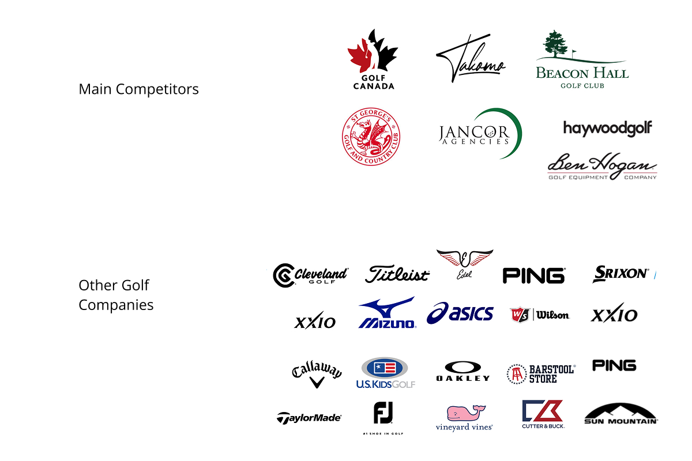
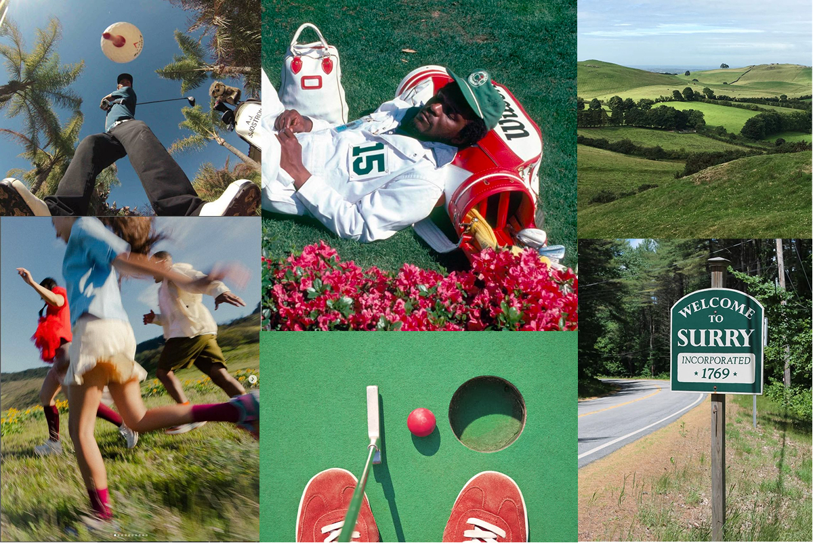
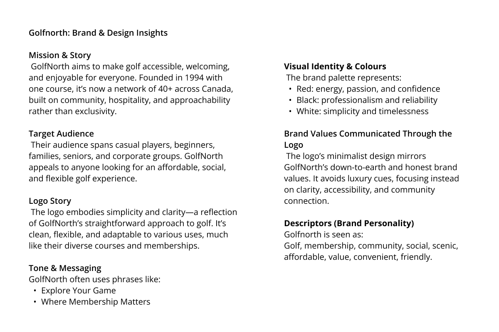
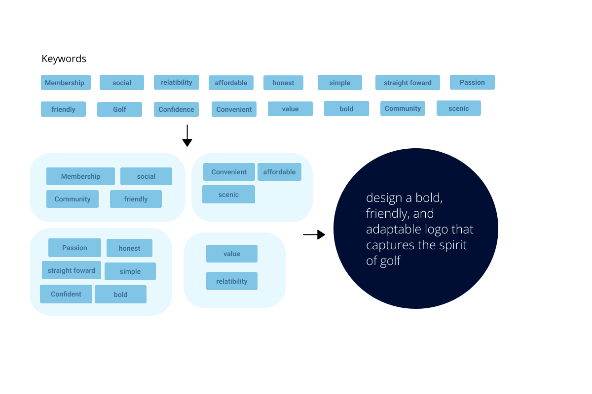
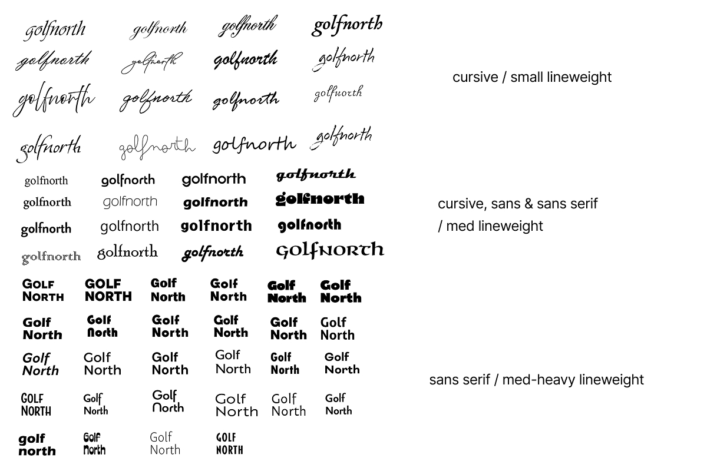
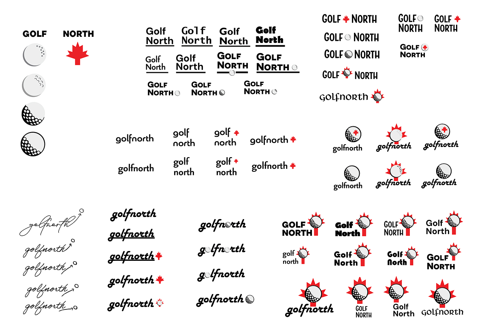
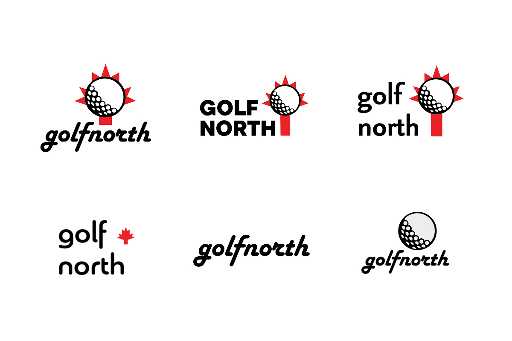
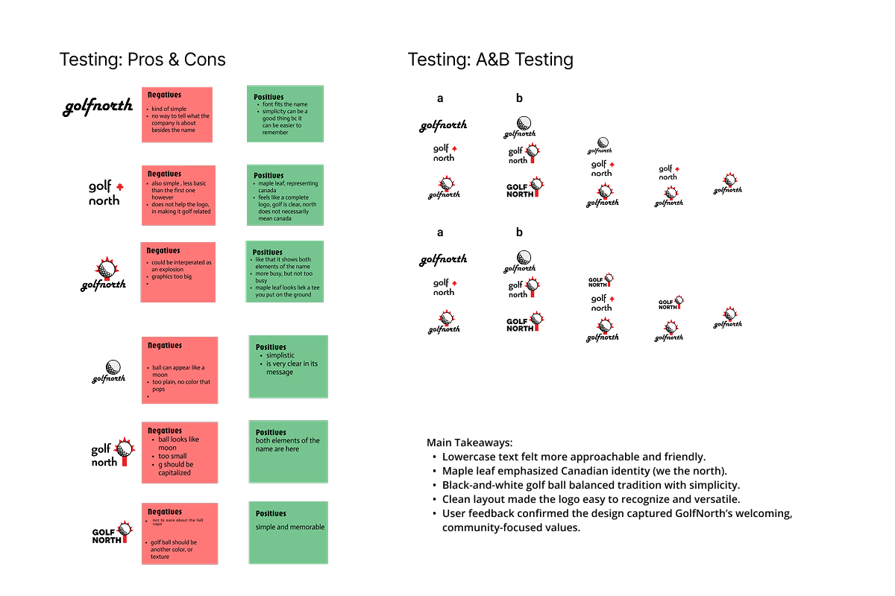
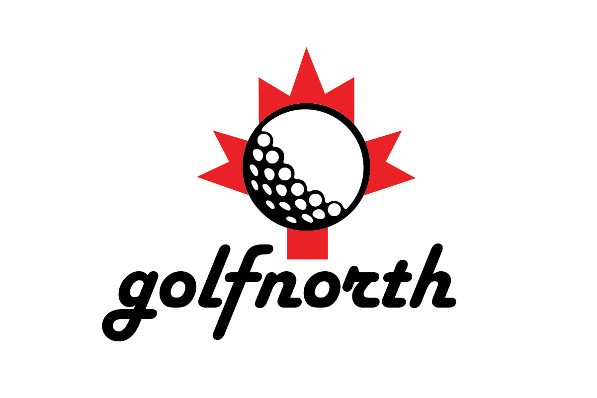

Project Overview
Description
A logo redesign proposal for the Golfnorth golf company. The goal was to fix all discrepancies in the current logo, so it looks better on their website, posters, stickers, printed materials, physical signs, and anything else!
Problem
A logo redesign proposal for the Golfnorth golf company. The goal was to fix all discrepancies in the current logo, so it looks better on their website, posters, stickers, printed materials, physical signs, and anything else!
Goals
To design a logo that reflects Golfnorth's spirit with a golf ball hitting a maple leaf, which is bold and speaks more words than the current one!
Inspiration
Looking at Industry Trends
I analyzed Golfnorth's direct competitors within their price range, compiling their branding and logos to understand the competitive landscape. To grasp broader industry trends, I also examined logos from various golf and sporting brands.

Creating a Moodboard
Based on pre-interview discussions with a Golfnorth employee, I confirmed that green is also part of their identity. This insight directly informed my moodboard, where I featured green alongside their signature red to create a cohesive visual system that reflects their established brand colors.

Research
Interview Takeaways & Outcomes
An interview with Golfnorth's branding team clarified their aesthetic goals, user needs, and target audiences. I used concept modeling to systematically translate these insights into focused design directions for the logo.


Design Process
Font Studies
I began with font studies, recognizing that many golf company logos rely heavily on typography.

Graphic Exploration
After compiling and categorizing a wide range of uppercase and lowercase fonts, I deconstructed "Golfnorth" into "golf" and "north" to explore symbolic representations—a maple leaf for the Canadian identity and a golf ball for the sport itself. With this visual toolkit established, I experimented with various compositions, generating over 50 distinct logo drafts through an iterative exploration process.

Finalizing the Concepts
From 50+ drafts, I selected 6 strong compositions and refined them. I tested these with frequent golfers using qualitative feedback (pros/cons sticky notes) and quantitative A/B testing for clear performance metrics.


Final Logo
The final design features "golfnorth" in lowercase Harlow Solid Italic, layered with a bold black-and-white golf ball overlapping a bright red maple leaf. The dynamic composition suggests motion while keeping both symbols clear and legible.

Takeaway
As someone who doesn't personally engage with golf, this project pushed me to set aside my own preferences and fully immerse myself in the golfer's mindset. This distance became a strength—it forced me to rely entirely on user research rather than assumptions, ensuring the design genuinely served its audience.